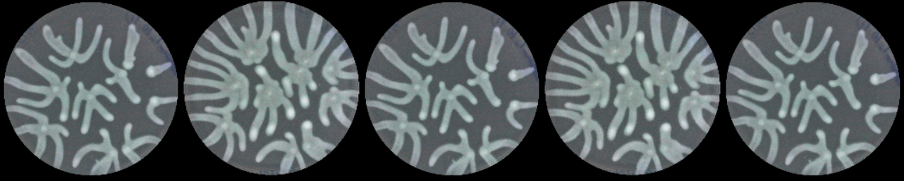
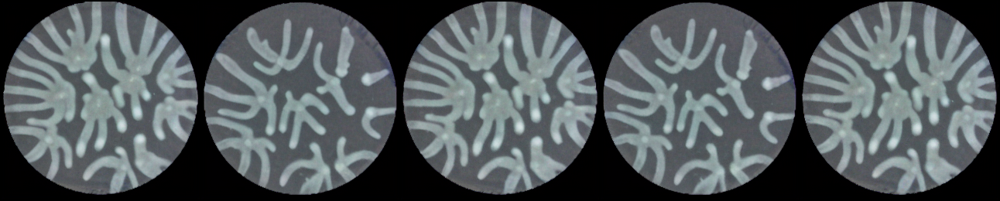

Replicate-to-replicate augmenter — training results job 52034860 · COMPLETED
5 epochs · 375,749 steps · 3d 2h on 1× A5000 · checkpoint epoch=4-step=375749.ckpt (8.6 GB)
Each image is one row of the 5 fixed eval samples logged every 300 steps during training.
These 5 are the first records of the training JSON, so this shows in-distribution fit (how well it learned the training data),
not generalization to unseen species — that needs the held-out inference run.
Rows below: control = source replicate (ControlNet input) · reconstruction = target replicate (what it should match) · samples = what the model generated.
1 · Learning progression (generated samples over training)
2 · Final quality — generated vs. ground truth (step 375,600)
Compare the generated row to the reconstruction (target) row: same morphology family, realistic branching, correct dish framing. It generates a plausible new replicate, not a pixel copy.

control — source replicate (input)

reconstruction — target replicate (ground truth)samples — model output